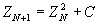

Sound Generation with the Julia Set
Hans Mikelson
hljmm@werewolf.net
julia.orc julia.sco
Introduction
Fractals can be used to create beautiful and interesting images. You have probably seen the beautiful images of the Mandelbrot set and may have seen images of its cousin the Julia set. A typical Csounder viewing a fractal will ask "It looks nice but how does it sound?" In this article I present two different ways to convert fractal images to sound.
The Julia Set
The Julia set is based on the iteration of the formula

where Z and C are complex numbers. Z is initialized to a coordinate in the complex plane and C is initialized to some constant value. This is different from the Mandelbrot set where Z is initialized to zero and C is initialized to a coordinate. Typically a rectangular grid is scanned and the number of iterations it takes for |Z| to exceed two at each coordinate is translated into a color. If some maximum number of iterations is reached and |Z| is still less than two the point is considered to be a member of the Julia set and the iteration is stopped. The most interesting patterns occur at points close to the border of the Julia set. Below is an image of the Julia set
Csound does not support complex arithmetic at this time so in order to implement the Julia set in Csound you have to know how to square a complex number.
The following Csound code fragment illustrates how the inner loop of the Julia set would be implemented.
julialoop: ; Iteration for calculating the Julia Set.
kxx = kx*kx-ky*ky+kcx ; Compute Z^2 + C
kyy = 2*kx*ky+kcy ; (x+iy)^2=x^2+ixy-y^2
kx = kxx
ky = kyy
kcount = kcount + 1
; Check for loop exit
if ((kx*kx+ky*ky<4) && (kcount<ilpmax)) goto julialoop
Amplitude scan
The first way that occurs to me to translate the Julia set as a sound is to scan back and forth across the image area and interpret the iteration value as a sound wave amplitude instead of a color. To scan back and forth I use a square "clock" indicating the direction of the scan. The clock frequency is the base frequency of the tone generated.
kclkold = kclk ; Remember the previous clock value
kclk oscil 1, ifqc, 9 ; Obtain the new clock value
;<--Julia loop goes here-->;
kytrace = kytrace + kystep*kclk ; Continue the raster scan
if (kclkold == kclk) goto endif1 ; If (kclkold != kclk) then
kxtrace=kxtrace+kxstep ; Update the X position
endif1:
The clock determines the direction of the y scan and when the clock changes direction I know it is time to increment the x value.
This method can lead to the generation of large DC biases and widely varying amplitudes. I use a butterhp set with a low cut-off frequency to filter out the DC bias and I use balance to generate more of a constant signal. Interpreting the sound in this way leads to a lot of step noise or aliasing which sounds rather harsh. To make a more pleasant sound I use a resonant filter.
arez rezzy acount, kfco, 20 ; Add resonant filter effect
adcblk butterhp arez, 20 ; Remove the DC bias
abal balance adcblk, aamp ; Try to compensate for varying amplitudes
The final sound is a filtered buzzy noise.
Additive synthesis
The second way of interpreting the Julia set as sound that occurs to me is to treat the image as if it were a spectrogram of the sound. In this instrument I use the colors to control the level of harmonically related oscillators and treat the complex axis as a frequency axis. Compile times are fairly long since the value of the Julia set must be computed for each oscillator for each sample. In the example instrument I use eight oscillators. To prevent the oscillators from clicking each time the volume increases I use portamento to ramp between amplitudes.
ka1 port kcnt1, iport ; Use portamento to avoid clicking
ka2 port kcnt2, iport ; as the different harmonics are adjusted.
ka3 port kcnt3, iport
ka4 port kcnt4, iport
ka5 port kcnt5, iport
ka6 port kcnt6, iport
ka7 port kcnt7, iport
ka8 port kcnt8, iport
ao1 oscil ka1, ifqc, 1 ; Fundamental
ao2 oscil ka2, ifqc*2, 1 ; 1st harmonic
ao3 oscil ka3, ifqc*3, 1 ; 2nd harmonic
ao4 oscil ka4, ifqc*4, 1 ; 3rd harmonic
ao5 oscil ka5, ifqc*5, 1 ; 4th harmonic
ao6 oscil ka6, ifqc*6, 1 ; 5th harmonic
ao7 oscil ka7, ifqc*7, 1 ; 6th harmonic
ao8 oscil ka8, ifqc*8, 1 ; 7th harmonic
aamp init iamp ; balance needs arate so convert here.
abal balance ao1+ao2+ao3+ao4+ao5+ao6+ao7+ao8, aamp, 100
This produces sort of fluttery buzzing sound.
Experimental
The two instruments presented here could be used to translate other fractals into sound. For the additive instrument experiments could be done with other frequency relationships besides the harmonically related ones I used. The other method that I can think of for translating fractals into sound is to use a granular synthesis approach. If you can think of another way to create sound with fractals please let me know. |